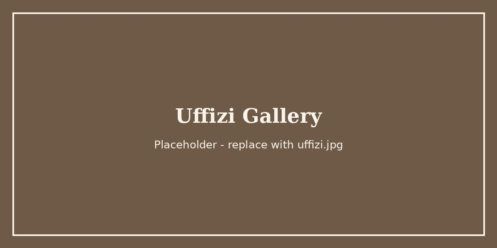
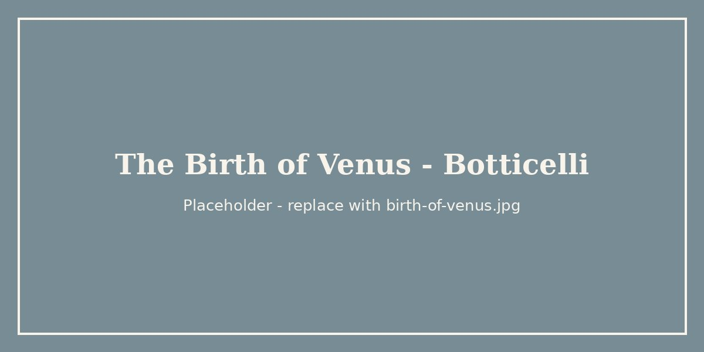
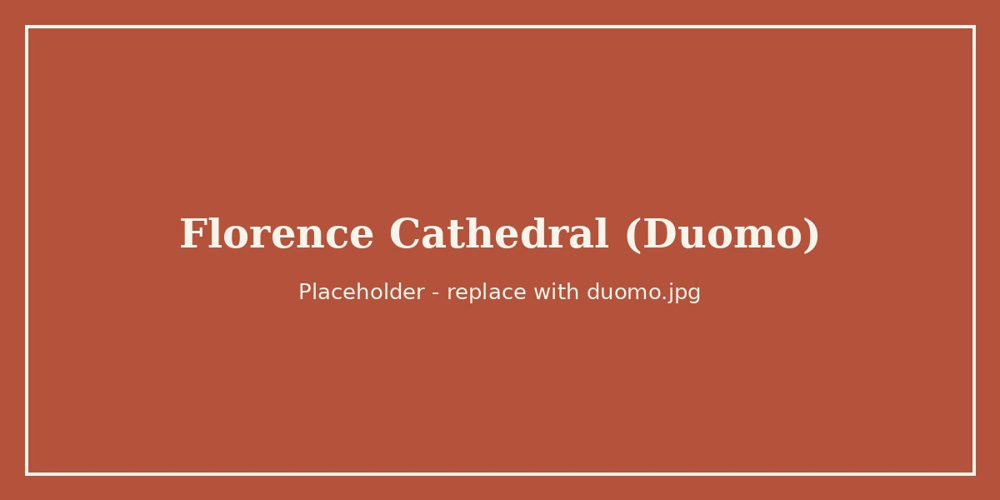
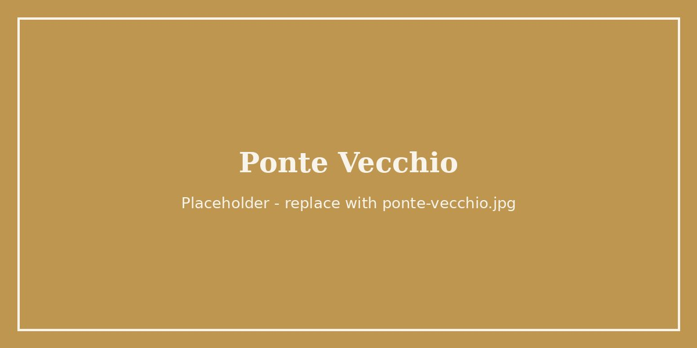

Uffizi Gallery
One of the world's great art museums, with Italian paintings from Giotto to Caravaggio.
Don't miss: The Birth of Venus
Your guide to the art museums of Florence
Florence has more than 70 museums, and many of the most famous works of the Renaissance never left the city. These six are the ones every art lover should see.

One of the world's great art museums, with Italian paintings from Giotto to Caravaggio.
Don't miss: The Birth of Venus

Home of Michelangelo's David and his unfinished Prisoners.
Don't miss: David

The former royal palace, full of paintings by Raphael and Titian, with the Boboli Gardens behind it.
Don't miss: the Palatine Gallery

Italy's most important collection of Renaissance sculpture, in a medieval palace.
Don't miss: Donatello's David
The original statues and panels made for the cathedral, the baptistery and the bell tower.
Don't miss: the Gates of Paradise

Florence's town hall for 700 years, with huge frescoed halls and a tower you can climb.
Don't miss: the Hall of the Five Hundred
Tip: book the Uffizi and the Accademia online in advance. Queues in summer can last more than two hours.